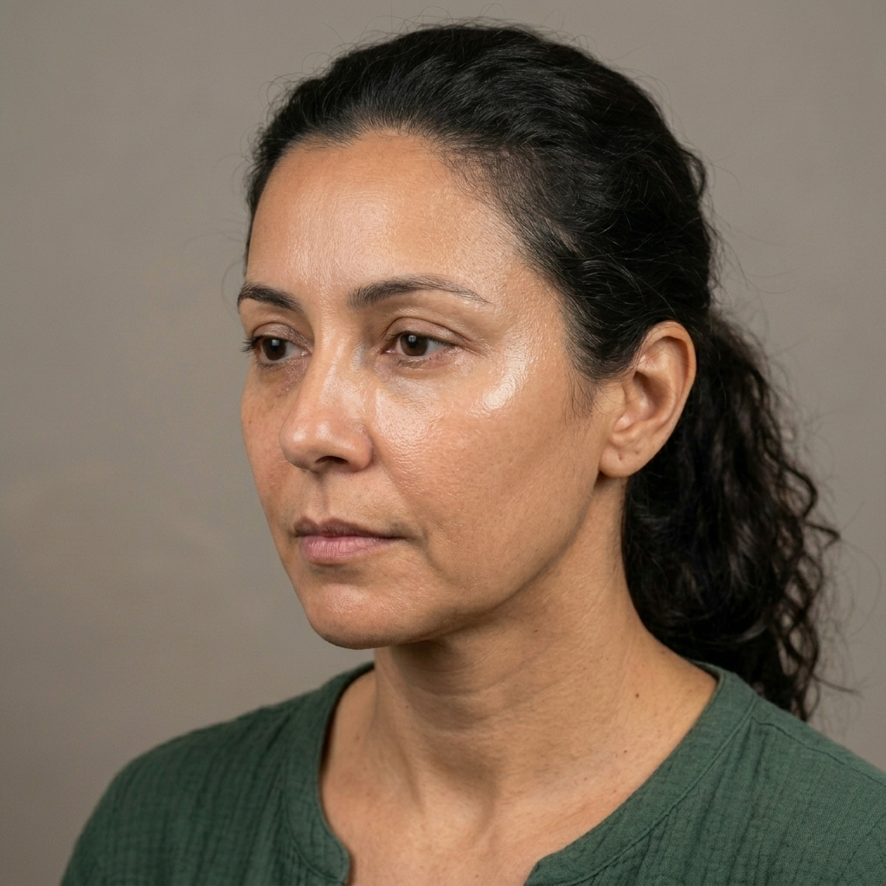

Evolução Clínica em Frames • Bioestímulo de Colágeno
Caso 01: Paciente 42 anos • Protocolo Radiesse® + Ultraformer MPT
VÍDEO EM LOOP CLÍNICO


DIA 00
AVALIAÇÃO INICIAL
DRA. SOFIA MORAES • JARDINS SP
Queixa Inicial: Perda de Sustentação & Olhar Cansado
Diagnóstico de perda de volume no terço médio e flacidez incipiente no contorno mandibular.
Mapeamento 3D